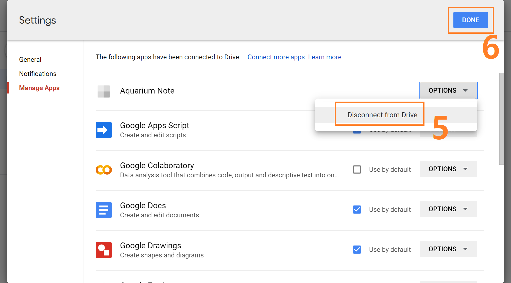

# Thanks for using the app and sorry for no further big updates.
# Fully changed "Aquarium Note 2" for Android and iOS is under development.
Version 1.8.8.1
- Limit the permission for Google Drive
# Despite the fact that old version of the app doesn't access user's files which are not created by the app, I think that limit the permission for Google Drive is better for users and me.
# Really want to check the permission is changed, please be careful to follow steps.
- Be sure to the app is running with recent data.
- Go to https://drive.google.com/ with your desktop PC or laptop.
- Disconnect the Aquarium Note app from Google Drive like below.

- Delete AquariumNoteBackup folder forever like below.
- On the app, do backup and restore data. The app will ask permission again.